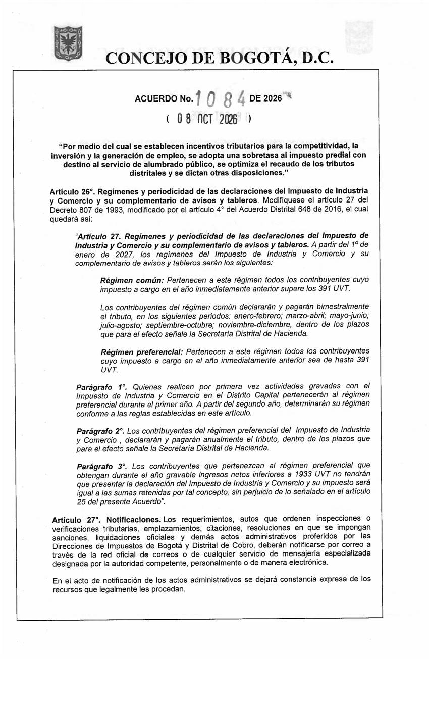

Regímenes del ICA: art. 1 de la Resolución SDH-000195 (2026) y art. 26 del Acuerdo 1084 (desde 2027, página 48 del PDF). UVT y SMMLV salen de las resoluciones de la DIAN y de los decretos del salario mínimo; los de 2027 aún no existen.

| Año gravable | Fuente | Umbral (UVT) | Base del umbral |
|---|---|---|---|
| 2026 | Resolución SDH-000195 de 2025, art. 1 | 391 | impuesto a cargo (FU) de todo el año gravable 2025 |
| 2027 | Acuerdo 1084 de 2026, art. 26 (reemplaza el art. 27 del Decreto 807 de 1993) | 391 | impuesto a cargo del año anterior |
| Año | UVT | Resolución de la DIAN | SMMLV | Decreto del salario mínimo |
|---|---|---|---|---|
| 2025 | 49799 | Resolución DIAN 000193 de 2024 (https://normograma.dian.gov.co/dian/compilacion/docs/resolucion_dian_0193_2024.htm) | 1423500 | Decreto 1572 de 2024 (https://normativa.colpensiones.gov.co/compilacion/docs/decreto_1572_2024.htm) |
| 2026 | 52374 | Resolución DIAN 000238 de 2025 (https://normograma.dian.gov.co/dian/compilacion/docs/resolucion_dian_0238_2025.htm) | 1750905 | Decreto 1469 de 2025 (https://normativa.colpensiones.gov.co/compilacion/docs/decreto_1469_2025.htm). El valor no cambió: el Decreto 159 de 2026, transitorio, fijó el mismo mientras el Consejo de Estado suspendió el decreto; la Sección Segunda revocó la suspensión y el Decreto 1469 recuperó sus efectos. La demanda de nulidad sigue sin fallo. |
| 2027 | pendiente | la DIAN la fija a finales de 2026; aún no se publica | pendiente | el Gobierno lo fija a finales de 2026; aún no se publica |